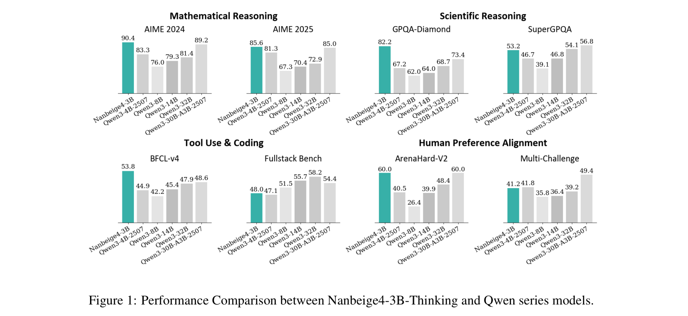
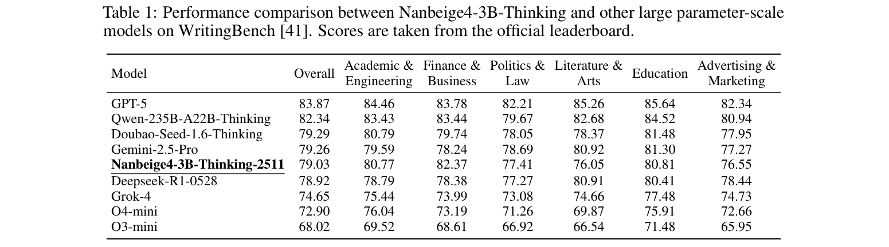
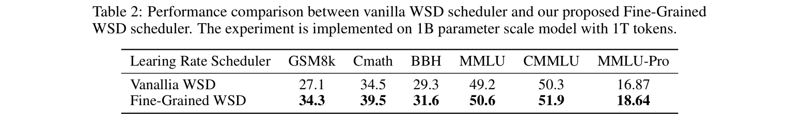
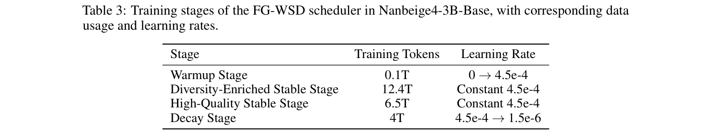
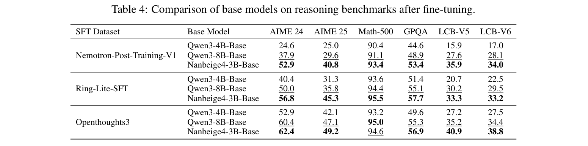
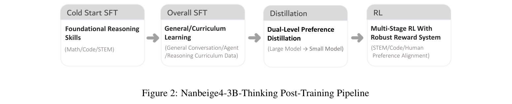
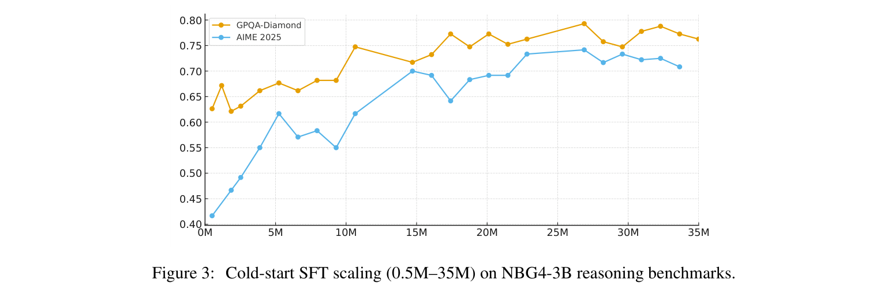
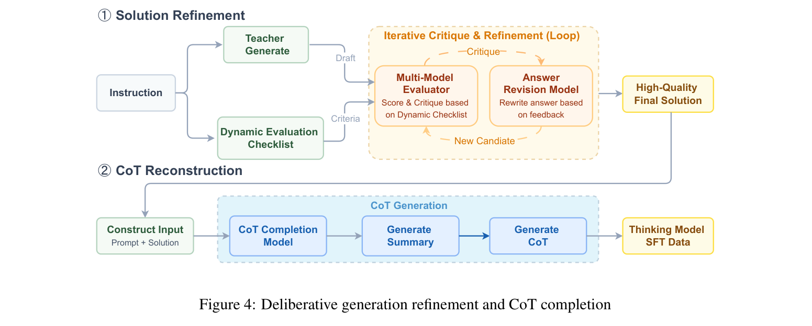
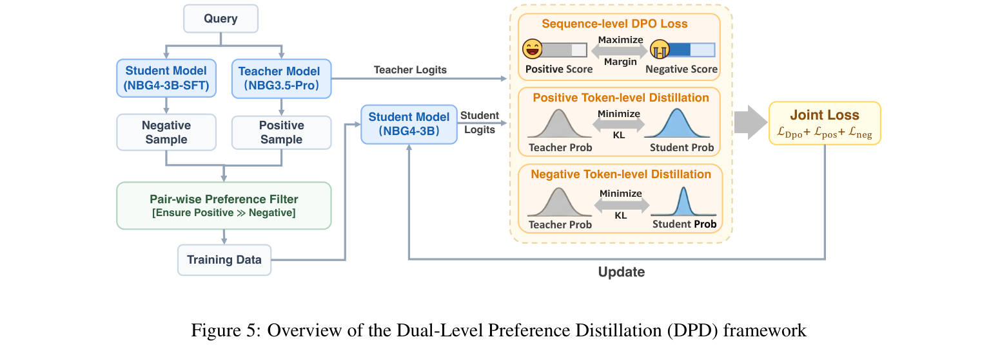
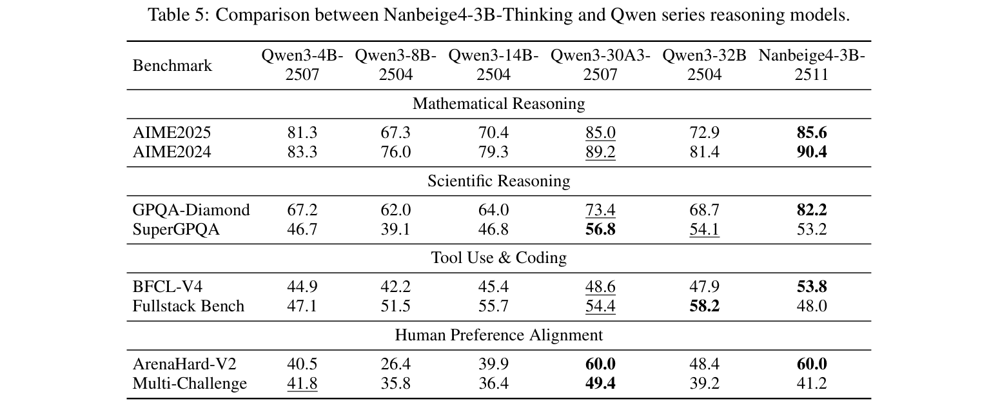

Nanbeige4-3B 技术报告：探索小语言模型的前沿
Nanbeige LLM Lab, Boss Zhipin（BOSS 直聘）
摘要
我们提出 Nanbeige4-3B，这是一系列规模小但性能优异的语言模型。通过在 23T 高质量 token 上进行预训练，并使用超过 3,000 万条多样化指令进行微调，我们拓展了小语言模型 scaling law 的边界。在预训练中，我们设计了细粒度 Warmup-Stable-Decay（FG-WSD）训练调度器，跨阶段逐步优化数据混合比例，以提升模型性能。在后训练中，为提高 SFT 数据质量，我们设计了一种将审慎生成优化与 chain-of-thought 重建相结合的联合机制，在复杂任务上取得了显著收益。SFT 之后，我们使用旗舰推理模型，通过所提出的双重偏好蒸馏（Dual Preference Distillation，DPD）方法对 Nanbeige4-3B 进行蒸馏，进一步提升性能。最后，我们开展多阶段强化学习，利用可验证奖励与偏好建模，增强推理和人类对齐能力。广泛评测表明，Nanbeige4-3B 不仅显著优于参数规模相近的模型，而且在众多基准上能够与大得多的模型竞争。模型 checkpoint 可在 https://huggingface.co/Nanbeige 获取。

预印本。
1 引言
近年来，我们见证了数千亿到数万亿参数的强大大语言模型的涌现 [43, 46, 11, 32]。这些模型展现出出色的推理能力，已成为推动人工智能演进的关键力量。尽管性能令人瞩目，这些模型在部署时推理成本高昂，在研究中无论完整复现还是微调，训练费用也很高。这一现状凸显了探索小语言模型（Small Language Models，SLMs）潜力的重要性，它们可以作为资源高效的替代方案。
本文提出 Nanbeige4-3B 模型系列。尽管体积紧凑，它们在数学、科学推理、人类偏好对齐、创意写作和工具使用方面均展现出强劲且均衡的能力，显著超越许多更大的模型。这些结果凸显了我们训练方法的有效性，并清楚表明：经过精心设计的小模型能够取得超越大得多的模型的性能。
为清晰展示模型能力，我们将 Nanbeige4-3B 与多个参数规模的 Qwen3 系列模型进行比较。对于基础模型，我们使用相同的 SFT 数据集开展多次后训练，结果显示 Nanbeige4-3B-Base 显著优于 Qwen3-8B-Base。对于推理模型，Nanbeige4-3B-Thinking 的平均整体表现超过 Qwen3-14B。值得关注的是，它在数学与科学推理，以及工具使用、人类偏好对齐的特定维度上，甚至超越规模大得多的 Qwen3-32B 和 Qwen3-30B-A3B。此外，在创意写作能力方面，Nanbeige4-3B-Thinking 接近若干最先进大模型的水平，详见 2025 年 11 月 WritingBench 排行榜。

本报告全面介绍模型从预训练到后训练的完整训练流程，并重点介绍对性能提升贡献最大的技术。具体而言，Nanbeige4-3B 通过以下技术增强模型能力：
采用混合数据过滤与细粒度 WSD 的预训练
- 混合数据过滤。为更精确地筛选高质量数据，我们开发了结合基于标签的评分 [29, 47] 与基于检索的召回 [7] 的混合策略，最终得到包含 23 万亿高质量 token 的综合训练语料。
- 细粒度 WSD。我们提出细粒度 Warmup-Stable-Decay（FG-WSD）调度器，以最大限度发挥高质量数据的效用。该方法采用细粒度、质量逐步提升的数据课程，将稳定阶段划分为多个阶段，并逐步优化数据混合比例。评测表明，与标准 WSD 调度器 [13, 19] 相比，我们的方法带来了显著提升。
采用多阶段 SFT、蒸馏与强化学习的后训练
- 多阶段 SFT。我们首先使用超过 3,000 万条经过清洗、涉及数学、科学和代码的样本微调基础模型，以建立强大的推理能力。随后，我们采用（接续下一页）
- （接续上一页）课程学习，逐步增加指令的多样性和难度，确保模型在广泛任务上具备稳健表现。为进一步提高 SFT 回答质量，我们引入将审慎学习与 Chain-of-Thought（CoT）重建相结合的新方法：先优化解答部分，使其更出色，再重建一条在逻辑上能够导向该优化解答的 CoT。由此获得的高质量 SFT 训练样本，显著优于通过拒绝采样生成的样本。
- 蒸馏。SFT 之后，我们以 Nanbeige 旗舰推理模型为教师，通过提出的双重偏好蒸馏（DPD）方法蒸馏 Nanbeige4-3B 学生模型。具体而言，我们创新了损失函数设计：一方面，学生模型作为策略模型学习模仿教师的输出分布；另一方面，同时训练它区分高质量与低质量回答。
- 强化学习。在蒸馏模型的基础上，我们开展多阶段 RL 训练以进一步提升性能。针对 STEM 推理、编码和人类偏好对齐等不同训练阶段，我们设计了一套相应的奖励与验证策略，确保整个过程持续、稳定地提升。
基于上述技术，我们开发了基础模型 Nanbeige4-3B-Base 和推理增强模型 Nanbeige4-3B-Thinking。为支持社区并促进开放、可复现的 LLM 研究，我们开源了 Nanbeige4-3B 模型系列。我们希望帮助研究人员和开发者探索先进训练方法，加速以推理为中心的模型创新，并为更加开放、协作的 AI 生态作出贡献。
2 预训练
本节首先介绍预训练数据集的构建及相应训练方案，随后评估 Nanbeige4-3B-Base 模型的性能。
2.1 预训练数据
构建 Nanbeige4-3B 的预训练语料时，我们广泛收集高质量、多样化的数据。语料涵盖各类网页、学术文章、书籍、源代码及其他材料。为加强对人类世界的理解，我们不仅从 HTML 文档中提取干净文本，还开发了高效的 PDF 文本提取流程。我们进一步在预训练混合数据中加入针对特定能力的合成数据：它们以问答对、教科书、讲义和长 chain-of-thought 样本的形式出现，占预训练 token 总量的 15%。
2.2 预训练方案
制定 Nanbeige4-3B 的训练方案时，我们重点解决两个问题：
- 如何识别高质量数据，同时过滤低质量样本。
- 如何充分利用筛选出的数据，进一步提升性能。
本节后续首先介绍数据质量的评估与标注方式，再说明训练时如何利用这些质量评分提升模型性能。
2.2.1 数据质量识别
为保留高质量样本并过滤低质量样本，我们使用两种互补策略评估语料中每条数据的质量：（1）检查内在属性的多维标签；（2）相对于精心整理的高质量种子数据集进行基于相似度的评分，以评估外在匹配程度。
多维标签。我们采用与已有预训练数据质量评估研究 [13, 29] 类似的工作流，包括构建全面的标注体系，使用强模型对数据采样并标注，将标注蒸馏到较小模型以进行大规模标注，最终通过加权排序筛选高质量样本。我们的标注框架涵盖格式与内容两个关键方面。最初，我们定义了超过 60 个维度，（接续下一页）

（接续上一页）包括知识密度、推理密度和文本流畅度等。基于细粒度实验以及维度间相似度等多项标准，我们进一步筛选候选维度，最终保留 20 个。我们沿这 20 个维度标注全部预训练数据，并通过广泛的验证与优化实验完善其有效性。实证分析揭示了两点关键发现。第一，与内容相关的标签，比与格式相关的标签更能预测数据质量。第二，相比二元的 0–1 标注策略，细粒度 0–9 评分方案能显著提高数据选择的准确性。
基于相似度的评分。我们构建了一个包含数千亿条目的检索数据库，支持高效的文本与向量混合检索。凭借这一稳健的检索基础设施，我们持续迭代种子数据整理方式与检索方法。在种子数据方面，我们优先选择质量标签框架中排名较高的样本，同时确保其来自可靠、权威的来源。这一双重标准确保基础数据集同时具备出色的质量与可信的来源。在检索方法方面，我们开展了大量实验，研究如何平衡相似度得分与质量评估。我们发现，在质量标签体系之上应用检索策略，能够更精确地识别和选择高质量数据。
结合多维标签与相似度评分，我们过滤掉了数十万亿不符合标准的 token，保留了 12.5 万亿高质量训练 token。从这些数据中，我们进一步选出 6.5 万亿更高质量的 token，上采样至两个或更多 epoch，最终形成 23 万亿 token 的训练语料。
2.2.2 数据效用调度器
为充分利用所选数据进一步提升性能，我们引入一种新的学习率调度器：细粒度 Warmup-Stable-Decay（FG-WSD）。它在最初的 warmup 阶段提高学习率，在多个精心设计的稳定阶段保持学习率，最后平滑衰减。多阶段稳定期为利用已有数据评分开展探索提供更大空间，同时避免数据顺序与学习率变化发生不必要的耦合。
余弦衰减、WSD 与 FG-WSD。预训练学习率调度器通常分为两类：warmup-cosine-decay [34, 35, 9] 和 warmup-stable-decay（WSD）[13, 19, 20]。实验验证表明，当退火阶段的数据质量足够高时，WSD 显著优于 warmup-cosine-decay。因此，我们采用 WSD 作为基础调度策略，并在此基础上引入增强版本 FG-WSD。由于 WSD 在稳定阶段保持学习率恒定，我们据此优化数据重采样策略。FG-WSD 不在整个训练过程中均匀采样高质量数据，而是将训练分成多个细粒度阶段，在后续阶段逐步提高高质量数据的比例。
初步实验。我们在 1B 参数模型上验证 FG-WSD 的有效性，衰减阶段使用固定的 100B-token 语料。稳定阶段使用 500B 中等质量（MQ）token 训练一个 epoch，以及 250B 高质量（HQ）token 训练两个 epoch，稳定阶段共计 1T token。标准 WSD 将这 1T token 均匀打乱，每个样本均来自固定 1:1 的 HQ/MQ 混合数据。相比之下，FG-WSD 将稳定阶段划分为两个连续阶段。阶段 1 处理 750B token，由一个 epoch 的 HQ 数据（250B token）与一个 epoch 的 MQ 数据（500B token）组成。阶段 2 再处理额外 250B token，仅包含 HQ 子集。


如表 2 所示，我们的 FG-WSD 在所有基准上均优于标准 WSD1。数学与推理任务（如 GSM8K [4]、CMATH [40] 和 BBH [30]）上的提升，比知识与科学基准（如 MMLU [12]、CMMLU [15] 和 MMLU-Pro [38]）更明显。这是因为我们的质量评分框架在选择高质量数据时，更重视推理密度而非知识密度。
在使用 1T token 训练的 1B 参数模型上验证 FG-WSD 有效后，我们将该方法扩展至 Nanbeige4-3B-Base 的完整训练语料。整体训练流程分为四个清晰阶段：warmup、多样性增强稳定阶段、高质量稳定阶段和衰减阶段。各阶段分配的训练 token 数与对应学习率调度见表 3。最终衰减阶段的一个值得关注之处，是采用 ABF（Adjusting Base Frequency，调整基频）方法 [42]，将模型上下文长度扩展到 64K。这种长上下文能力使模型能够完整摄入合成的长 chain-of-thought 轨迹、书籍、学术文章及大型代码仓库，无须截断，确保训练全过程保留高价值长文本数据。
2.3 基础模型的 SFT 后评测
除了通过少样本评测衡量基础模型能力，SFT 后的下游性能也是更有信息量的指标，因为几乎所有生产系统最终都依赖经过指令微调的版本。因此，我们使用相同的 SFT 流程微调 Nanbeige4-3B-Base 与开源 Qwen3-Base 系列，并在六个代表性基准上比较所得 checkpoint：AIME 2024、AIME 2025、GPQA [26]、MATH-500 [18]、LiveCodeBench-V5 和 LiveCodeBench-V6 [14]。
为确保稳健性，我们使用三个独立的 SFT 数据集重复这一流程，包括 Nemotron-Post-Training-Dataset-V1 [21]、Ring-Lite-SFT-Data [31] 和 OpenThoughts-3 [10]，共开展 9 次 SFT 训练。对每个数据集，我们随机采样 500,000 个样本并训练 2 个 epoch。为保证严格受控、公平的比较，不同基础模型的所有训练超参数均保持相同。
如表 4 所示，在全部实验设置下，Nanbeige4-3B-Base 不仅显著优于 Qwen3-4B-Base，而且尽管规模只有更大的 Qwen3-8B-Base 的一半，也始终超越后者。这些结果表明，我们的模型为开发下游推理模型提供了明显更强的初始化。
1 对 GSM8k、Cmath 和 BBH，我们进行 3-shot 评测；对 MMLU、CMMLU 和 MMLU-Pro，进行 5-shot 评测。
3 后训练
本节详细介绍后训练的各个阶段。Nanbeige4-3B-Thinking 的整体后训练流程见图 2。首先，我们进行冷启动 SFT 与整体 SFT 两个微调阶段，赋予模型涵盖广泛任务的基础推理能力。随后，通过知识蒸馏进一步增强性能。最后，模型进行多阶段 RL 训练，以进一步提升多个领域的技能。

3.1 冷启动监督微调
在基础模型之上，我们首先开展冷启动监督微调（SFT），为推理建立稳健基础。该阶段聚焦高质量推理数据。经过系统清洗和筛选，我们收集约 3,000 万条数学、代码及学科问题求解与推理的问答样本。在此基础上，我们构建上下文长度为 32K token 的训练语料，其中约 50% 为数学推理、30% 为科学推理、20% 为代码相关任务。冷启动阶段旨在强化模型的 chain-of-thought 推理与结构化回答能力 [39, 36]，为后续能力拓展提供坚实基础。
扩大 SFT 指令规模。尽管近期一些技术报告认为，数万或数十万条高质量指令足以进行监督微调，但我们在 Nanbeige4-3B 上的实验呈现出不同趋势。如图 3 所示，在控制数据分布与整体质量时，将冷启动 SFT 指令集从数十万扩展至数千万条样本，仍能持续显著改善 AIME 2025、GPQA-Diamond 等高难推理基准，未出现明显的早期饱和点。受这一实证观察启发，我们明确采用扩大 SFT 指令规模的策略。我们在冷启动阶段使用数千万条精心整理的指令训练模型。这种大规模指令训练为模型提供更强的初始推理先验，并稳定其 chain-of-thought 生成策略，为后续训练阶段建立更可靠的基础。

3.2 整体监督微调
在模型获得初步推理能力后，我们开展整体 SFT 阶段 [22, 37, 48]，进一步增强通用能力及任务多样性。训练语料结合通用对话与写作数据（涵盖日常对话和多种文体）、agent 式交互数据（工具使用、任务分解、规划与执行）、针对冷启动阶段暴露弱点的更难推理数据，以及强化编程与代码理解的代码相关任务。使用 64K 上下文长度时，我们将数据大致混合为 40% 数学与学科推理、30% 通用问答与写作、20% agent 场景、10% 编码任务。这在保持强大推理性能的同时，系统提升模型的通用对话能力、任务执行能力及对多样应用场景的适应能力。下文详细介绍数据处理流程。

解答优化。为增强模型在复杂任务上的整体输出质量，我们开发一种将审慎生成优化与链补全 [33] 相结合的统一机制。具体而言，针对每条指令，系统先根据其语义和任务类型，从预定义标准池中选择适当标准，构建定制的多维评估清单，再将清单作为当前评估轮次的显式约束。清单有选择地整合正确性、完整性、一致性、可执行性和安全性等标准，并进一步将每项标准细化为具体检查点，以便细粒度评估候选回答。在下一次迭代中，系统从教师模型池中动态选择最擅长当前指令的模型，让其与当前 SFT/Thinking 模型共同生成候选答案。随后，评估模型依据预定义清单对所有候选进行交叉评估与比较评分，输出指出错误位置、缺失步骤和优化建议的结构化反馈。这些反馈推动 Thinking 模型反复执行生成、审查、修订循环，持续提升解答质量。
CoT 重建。经过多轮审慎思考与改写，最终解答质量虽大幅提升，原始 chain-of-thought 却常被打乱或丢失，难以获得同时提供高质量最终答案以及稳定、可学习推理过程的监督信号。为此，我们额外训练一个链补全模型。构建 Thinking 模型训练数据时，将指令与多轮优化后的最终解答拼接，输入这一模型。经验表明，先生成摘要有助于增强可跟随性，因此模型先生成简短的 chain-of-thought 摘要，再生成与最终答案一致的显式 chain-of-thought。最后，我们将补全后的 chain-of-thought 与最终答案拼接，作为目标输出和 Thinking 模型的训练样本，在保留答案质量的同时，恢复结构化且对齐良好的推理监督信号。

将上述机制整合进整体 SFT 阶段后，模型与人类偏好的对齐显著改善：在 Arena-Hard v2 基准上，分数提升 16%，且推理能力没有退化 [16]。
函数调用支持。我们的模型原生支持函数调用范式，通过正式定义且标准化的参数规范实现无缝工具调用。在整体 SFT 阶段，我们按比例增加函数调用（FC）数据，进一步强化这一能力。为提高函数调用熟练度，我们同时引入开源数据与合成数据。对于开源部分，我们统一数据格式、重建回答，使每个样本严格遵循函数调用 schema，并包含显式推理路径。对于合成部分，我们部署真实环境，利用 Nanbeige3.5-Pro 等强模型，通过拒绝采样生成高质量轨迹。此外，我们采用多 agent 框架模拟真实的用户—助手—工具交互，构建覆盖多样场景与广泛难度的数据 [44]。
3.3 双层偏好蒸馏
我们提出双层偏好蒸馏（Dual-Level Preference Distillation，DPD），这是一种协调 token 级知识蒸馏与序列级偏好优化的联合训练框架。其中，直接偏好优化（DPO）[24] 充当序列级决策边界正则项，最大化正负回答的间隔。同时，我们对两类样本引入教师模型概率分布的 token 级监督。这种双粒度设置改善指令遵循与主观偏好对齐，同时大幅增强模型的复杂推理能力。
数据构建时，对同一指令从教师模型 Nanbeige3.5-Pro 中采样多个回答，经模型评分与规则过滤后，选择最高分答案作为正样本。负样本则从正在训练的 3B 学生模型中采样生成。随后，这些候选经过自动评估与规则检查，只保留质量及得分显著低于对应正样本的候选。
优化目标采用联合损失，将 token 级概率蒸馏与序列级 DPO 偏好损失结合。在正样本上，训练学生模型在每个 token 处匹配 Nanbeige3.5 Pro 的概率分布。在负样本上同样施加蒸馏损失：教师对学生生成的错误回答提供参考分布，降低高置信度错误 token 的概率，提高被低估但合理的替代 token 的概率。这一设计增强模型纠正自身错误和识别错误的能力。序列级 DPO 偏好损失以间隔约束实现，显式扩大正负回答的分数差距，从而使决策边界更清晰，并改善风格对齐。
以 Nanbeige4-3B SFT 模型为基线，使用该框架训练，在多个内部与公开基准上取得持续且显著的相对提升：在 AIME 2024、AIME 2025 [6] 等高难数学基准上提升约 8%；在 GPQA [25] 等科学推理任务上提升约 10%；在强调工具使用与问题分解的 BFCL V4 [23] 上提升约 30%。同时，Arena 式主观偏好评测仍有约 8% 的提升 [16]。此外，在这一蒸馏框架之上加入 RL 阶段，比直接从 SFT 基线开始 RL 带来大得多的收益。
3.4 强化学习
大规模监督微调与蒸馏为 NBG4-3B 的推理能力奠定坚实基础。我们进一步通过 RL 提升推理能力与人类偏好对齐。我们采用多阶段 RL 框架，每个阶段针对一个特定能力维度，而非在跨多个知识领域的混合语料上执行单阶段 RL [43]。为充分释放各阶段潜力，我们在每个 RL 阶段前使用最新模型进行 on-policy 数据过滤，并依据训练数据特点采用适当的奖励模型或验证器。
3.4.1 On-Policy 数据过滤
多阶段 RL 训练中，每个阶段结束后模型推理能力都会提升。由于跨领域知识迁移，之前具有挑战的样本，在后续阶段可能变得简单，对进一步提升贡献很小。为维持高质量学习信号，我们在每个 RL 阶段之前，使用上一阶段模型进行 on-policy 数据过滤。
具体而言，我们使用上一阶段模型计算每道问题的 avg@16 准确率，仅保留通过率严格介于 10% 与 90% 之间的样本。这使训练聚焦于既不简单也并非无法解决的问题，最大化每次 RL 更新的有效性。
3.4.2 多阶段强化学习
为增强跨领域推理能力，我们采用多阶段 RL。尽管混合语料训练能够带来较强跨领域迁移 [2]，我们观察到，它往往会拖慢特定领域进展：模型可能需要许多次更新，才能在更具挑战的技能上取得微小提升。例如，同时训练高等数学与竞赛编程数据时，模型在数学上的进步通常大于竞赛编程。为解决这一失衡，我们将 RL 划分为多个阶段，各自专注单一领域，使模型在每个阶段集中能力学习领域技能，同时在完整训练流程中仍能受益于跨领域迁移。
每个 RL 阶段都采用 on-policy GRPO [27]，并通过若干增强措施稳定训练。具体而言，我们遵循 DAPO [45] 的启示，移除 KL 惩罚项，并屏蔽截断序列的损失。训练分为以下三个 RL 阶段。
采用 agent 式验证器的 STEM RL。受 STEM 训练具有较强跨领域迁移能力的已有发现启发，我们以面向 STEM 的 RL 为第一阶段。数据集包含数学与自然科学问答对。数学问题来自多种开源数据集；物理、化学和生物问题使用专有竞赛级题集。对于包含多个子问的问题，我们将每个子问改写成上下文完整、可独立求解的问题。
在 STEM 领域，参考答案与模型输出可能以不同符号形式表达等价数值结果。为提供准确训练信号，我们采用调用 Python 解释器进行精确计算与化简的工具增强验证器 [8]。这种 agent 式验证器能够作出超越字符串匹配规则的稳健判断。
采用合成测试函数的实用编码 RL。该阶段旨在增强多种编程语言和任务场景中的实用编码能力。我们设计多 agent 系统，合成配有可执行测试函数的问题。为确保合成数据的正确性与完整性（接续下一页）

（接续上一页）[3]，我们采用逆向生成流程：先合成解法及对应测试函数，再生成自然语言题目描述。具体而言，系统先从 GitHub 检索高质量代码片段，再将其优化或演化为独立、可验证的解法，并生成配套的公开与私有测试函数。最后，通过沙箱执行验证所有候选三元组（问题、解法、测试函数），确保可靠性。RL 训练时执行这些测试函数，根据生成的解法是否通过全部测试提供二元奖励信号。
采用成对奖励模型的人类偏好对齐 RL。最后阶段聚焦创意写作、角色扮演等任务上的人类偏好对齐。此类任务偏好没有固定参考答案的开放式回答，因此许多已有工作依赖通用语言模型为候选回答的人类偏好对齐程度评分 [17]。然而，以通用语言模型作为奖励模型存在两个主要缺点：（i）通常需要较长的 chain-of-thought 才能给出最终判断，十分耗时；（ii）RL 训练容易发生 reward hacking。为此，我们训练一个仅用少量 token 就能表达偏好、同时对 reward hacking 具有较强抵抗力的成对奖励模型。
RL 训练时，我们先采样具有挑战、定义明确的多样化指令，再提示 Nanbeige3.5-Pro 等强基线模型生成高质量参考回答。策略模型 Nanbeige4-3B 产生的每条 rollout 都与相应参考回答配对，由成对奖励模型给出基于偏好的得分，作为策略优化的奖励信号。
3.5 后训练评测
我们在一组多样化基准上评测 Nanbeige4-3B，以更全面衡量性能。每个基准都运行多次评测，并报告这些重复试验的平均分，例如 avg@8 表示八次独立重复评测的平均分。评测涵盖以下基准：
- 数学推理：AIME 2025、AIME 2024 [6]（avg@8）。
- 科学推理：GPQA-Diamond [26]、superGPQA [5]（avg@3）。
- 工具使用与编码：BFCL-V4 [23]、Fullstack-Bench [1]（avg@3）。
- 人类偏好对齐：Arena-Hard V2 [17]、Multi-Challenge [28]（avg@3）。
所有基准均使用 0.6 的采样温度、0.95 的 top-p，并将最大生成长度设为 64k token。我们将 Nanbeige4-3B 与一系列开源小语言模型进行比较：（接续下一页）
（接续上一页）Qwen3-4B、Qwen3-8B、Qwen3-14B、Qwen3-30B-A3B 和 Qwen3-32B。其他模型的指标是在我们的环境中使用推荐超参数测得的。表 5 给出了评测结果。
实验结果表明，Nanbeige4-3B 尽管规模紧凑，仍擅长高难度推理任务。它在 AIME 2024、AIME 2025 和 GPQA-Diamond 上取得了新的最先进平均成绩，超越包括 Qwen3-32B 与 Qwen3-30B-A3B 在内、参数多达其 10 倍的模型。在数学与科学之外，模型还展现出较强工具使用能力，BFCL-V4 得分为 53.8，比 Qwen3-30B-A3B 绝对提高 5.2 分。人类偏好对齐同样突出：Nanbeige4-3B 在 Arena-Hard V2 达到并列最高的 60.0 分，相比 Qwen3-4B 相对提升 50%。
除本地部署评测的基准结果外，Nanbeige4-3B 在外部公开评测中也表现优异。如表 1 所示，Nanbeige4-3B-Thinking-2511 在 WritingBench 排行榜（2025 年 11 月）中位居前列，展现出与大得多的模型相当的多场景写作能力。
4 结论
本文提出 Nanbeige4-3B，这是一个紧凑但能力强大的 30 亿参数语言模型，通过数据与训练范式创新重新定义小模型所能达到的水平。它在精心整理的 23 万亿高质量 token 上训练，并通过包括 chain-of-thought 自省与优化、先进强化学习及知识蒸馏在内的新后训练技术增强，在多个领域展现出出色推理与生成能力。
尽管规模较小，Nanbeige4-3B 在 AIME、SuperGPQA、Arena-Hard V2 和 BFCL-V4 等高难基准上超越 Qwen3-8B、Qwen3-14B 等开源模型。尤其在最新官方 WritingBench 排行榜中，Nanbeige4-3B-Thinking-2511 取得第一梯队表现，可与 Deepseek-R1-0528 等大模型竞争。因此，Nanbeige4-3B 建立了一种新的轻量旗舰范式，为研究与实际部署同时提供强能力、高效率和易用性。
展望未来，我们希望进一步扩展小模型能力，处理自主软件工程（SWE）、深度研究 agent，以及多样化现实跨场景工具使用任务等更复杂的挑战。
参考文献
[1] Bytedance-Seed-Foundation-Code-Team, Yao Cheng, Jianfeng Chen, Jie Chen, Li Chen, Liyu Chen, Wentao Chen, Zhengyu Chen, Shijie Geng, and et al. Fullstack Bench：将 LLM 作为全栈程序员进行评估, 2025.
[2] Zhoujun Cheng, Shibo Hao, Tianyang Liu, Fan Zhou, Yutao Xie, Feng Yao, Yuexin Bian, Yonghao Zhuang, Nilabjo Dey, Yuheng Zha, Yi Gu, Kun Zhou, Yuqi Wang, Yuan Li, Richard Fan, Jianshu She, Chengqian Gao, Abulhair Saparov, Haonan Li, Taylor W. Killian, Mikhail Yurochkin, Zhengzhong Liu, Eric P. Xing, and Zhiting Hu. 从跨领域视角重新审视用于 LLM 推理的强化学习, 2025.
[3] Jason Chou, Ao Liu, Yuchi Deng, Zhiying Zeng, Tao Zhang, Haotian Zhu, Jianwei Cai, Yue Mao, Chenchen Zhang, Lingyun Tan, Ziyan Xu, Bohui Zhai, Hengyi Liu, Speed Zhu, Wiggin Zhou, and Fengzong Lian. AutoCodeBench：大语言模型是自动代码基准生成器, 2025.
[4] Karl Cobbe, Vineet Kosaraju, Mohammad Bavarian, Mark Chen, Heewoo Jun, Lukasz Kaiser, Matthias Plappert, Jerry Tworek, Jacob Hilton, Reiichiro Nakano, Christopher Hesse, and John Schulman. 训练验证器以解决数学应用题, 2021.
[5] Xinrun Du, Yifan Yao, Kaijing Ma, Bingli Wang, Tianyu Zheng, King Zhu, Minghao Liu, Yiming Liang, Xiaolong Jin, and et al. SuperGPQA：将 LLM 评测扩展至 285 个研究生学科, 2025.
[6] Emergent Mind. AIME 2024 与 AIME 2025 基准. https://www.emergentmind.com/topics/aime-2024-and-aime-2025-benchmarks, 2025. 访问日期：2025-11-29.
[7] Zhaoye Fei, Yunfan Shao, Linyang Li, Zhiyuan Zeng, Hang Yan, Xipeng Qiu, and Dahua Lin. Query of CC：从公共语料中挖掘大规模领域专门知识. CoRR, abs/2401.14624, 2024.
[8] Ruixiang Feng, Zhenwei An, Yuntao Wen, Ran Le, Yiming Jia, Chen Yang, Zongchao Chen, Lisi Chen, Shen Gao, Shuo Shang, Yang Song, and Tao Zhang. CoSineVerifier：面向计算类科学问题的工具增强答案验证, 2025.
[9] Aaron Grattafiori, Abhimanyu Dubey, Abhinav Jauhri, Abhinav Pandey, Abhishek Kadian, Ahmad Al-Dahle, Aiesha Letman, Akhil Mathur, Alan Schelten, and et al. Llama 3 模型家族, 2024.
[10] Etash Guha, Ryan Marten, Sedrick Keh, Negin Raoof, Georgios Smyrnis, Hritik Bansal, Marianna Nezhurina, Jean Mercat, Trung Vu, and et al. OpenThoughts：推理模型的数据方案, 2025.
[11] Daya Guo, Dejian Yang, Haowei Zhang, Junxiao Song, Ruoyu Zhang, Runxin Xu, Qihao Zhu, Shirong Ma, Peiyi Wang, and et al. DeepSeek-R1：通过强化学习激励 LLM 的推理能力, 2025.
[12] Dan Hendrycks, Collin Burns, Steven Basart, Andy Zou, Mantas Mazeika, Dawn Song, and Jacob Steinhardt. 衡量大规模多任务语言理解能力, 2021.
[13] Shengding Hu, Yuge Tu, Xu Han, Chaoqun He, Ganqu Cui, Xiang Long, Zhi Zheng, Yewei Fang, Yuxiang Huang, and et al. MiniCPM：通过可扩展的训练策略释放小语言模型潜力, 2024.
[14] Naman Jain, King Han, Alex Gu, Wen-Ding Li, Fanjia Yan, Tianjun Zhang, Sida Wang, Armando Solar-Lezama, Koushik Sen, and Ion Stoica. LiveCodeBench：对大语言模型代码能力进行全面、无污染的评测, 2024.
[15] Haonan Li, Yixuan Zhang, Fajri Koto, Yifei Yang, Hai Zhao, Yeyun Gong, Nan Duan, and Timothy Baldwin. CMMLU：衡量中文大规模多任务语言理解能力, 2024.
参考文献（续）
[16] Tianle Li, Wei-Lin Chiang, Evan Frick, Lisa Dunlap, Tianhao Wu, Banghua Zhu, Joseph E. Gonzalez, and Ion Stoica. 从众包数据到高质量基准：Arena-Hard 与 BenchBuilder 流程. arXiv preprint, 2024.
[17] Tianle Li, Wei-Lin Chiang, Evan Frick, Lisa Dunlap, Tianhao Wu, Banghua Zhu, Joseph E Gonzalez, and Ion Stoica. 从众包数据到高质量基准：Arena-Hard 与 BenchBuilder 流程. arXiv preprint arXiv:2406.11939, 2024.
[18] Hunter Lightman, Vineet Kosaraju, Yura Burda, Harri Edwards, Bowen Baker, Teddy Lee, Jan Leike, John Schulman, Ilya Sutskever, and Karl Cobbe. 让我们逐步验证, 2023.
[19] Aixin Liu, Bei Feng, Bing Xue, Bingxuan Wang, Bochao Wu, Chengda Lu, Chenggang Zhao, Chengqi Deng, Chenyu Zhang, Chong Ruan, et al. DeepSeek-V3 技术报告. arXiv preprint arXiv:2412.19437, 2024.
[20] MiniMax, Aili Chen, Aonian Li, Bangwei Gong, Binyang Jiang, Bo Fei, Bo Yang, Boji Shan, Changqing Yu, Chao Wang, and et al. MiniMax-M1：通过 lightning attention 高效扩展测试时计算, 2025.
[21] Dhruv Nathawani, Igor Gitman, Somshubra Majumdar, Evelina Bakhturina, Ameya Sunil Mahabaleshwarkar, , Jian Zhang, and Jane Polak Scowcroft. Nemotron-Post-Training-Dataset-v1, 2025.
[22] Long Ouyang, Jeff Wu, Xu Jiang, Diogo Almeida, et al. 利用人类反馈训练语言模型遵循指令. Advances in Neural Information Processing Systems, 2022.
[23] Shishir G. Patil, Huanzhi Mao, Charlie Cheng-Jie Ji, Fanjia Yan, Vishnu Suresh, Ion Stoica, and Joseph E. Gonzalez. Berkeley 函数调用排行榜（BFCL）：从工具使用到大语言模型的 agent 能力评测. In Forty-second International Conference on Machine Learning, 2025.
[24] Rafael Rafailov, Archit Sharma, Eric Mitchell, Stefano Ermon, Christopher D. Manning, and Chelsea Finn. 直接偏好优化：你的语言模型本身就是奖励模型. Advances in Neural Information Processing Systems, 2024.
[25] David Rein, Betty Li Hou, Asa Cooper Stickland, Jackson Petty, Richard Yuanzhe Pang, Julien Dirani, Julian Michael, and Samuel R. Bowman. GPQA：研究生级别、无法通过 Google 搜索轻易解答的问答基准. arXiv preprint, 2023.
[26] David Rein, Betty Li Hou, Asa Cooper Stickland, Jackson Petty, Richard Yuanzhe Pang, Julien Dirani, Julian Michael, and Samuel R. Bowman. GPQA：研究生级别、无法通过 Google 搜索轻易解答的问答基准, 2023.
[27] Zhihong Shao, Peiyi Wang, Qihao Zhu, Runxin Xu, Junxiao Song, Xiao Bi, Haowei Zhang, Mingchuan Zhang, Y. K. Li, Y. Wu, and Daya Guo. DeepSeekMath：突破开放语言模型数学推理的极限, 2024.
[28] Ved Sirdeshmukh, Kaustubh Deshpande, Johannes Mols, Lifeng Jin, Ed-Yeremai Cardona, Dean Lee, Jeremy Kritz, Willow Primack, Summer Yue, and Chen Xing. MultiChallenge：对前沿 LLM 具有挑战性的真实多轮对话评测基准, 2025.
[29] Dan Su, Kezhi Kong, Ying Lin, Joseph Jennings, Brandon Norick, Markus Kliegl, Mostofa Patwary, Mohammad Shoeybi, and Bryan Catanzaro. Nemotron-CC：将 Common Crawl 转化为精炼的长期预训练数据集, 2025.
[30] Mirac Suzgun, Nathan Scales, Nathanael Schärli, Sebastian Gehrmann, Yi Tay, Hyung Won Chung, Aakanksha Chowdhery, Quoc V. Le, Ed H. Chi, Denny Zhou, and Jason Wei. 高难度 BIG-Bench 任务以及 chain-of-thought 能否解决它们, 2022.
[31] Ling Team. Ring-Lite：通过 C3PO 稳定的 LLM 强化学习实现可扩展推理, 2025.
[32] Ling Team, Ang Li, Ben Liu, Binbin Hu, Bing Li, Bingwei Zeng, Borui Ye, Caizhi Tang, and Changxin Tian et al. 增强每次激活：将通用推理模型扩展至万亿参数开放语言基础模型, 2025.
参考文献（续）
[33] Tencent Hunyuan Team. Hunyuan-TurboS：通过 Mamba 与 transformer 协同及自适应 chain-of-thought 推进大语言模型. arXiv preprint, 2025.
[34] Hugo Touvron, Thibaut Lavril, Gautier Izacard, Xavier Martinet, Marie-Anne Lachaux, Timothée Lacroix, Baptiste Rozière, Naman Goyal, Eric Hambro, Faisal Azhar, Aurelien Rodriguez, Armand Joulin, Edouard Grave, and Guillaume Lample. LLaMA：开放、高效的基础语言模型, 2023.
[35] Hugo Touvron, Louis Martin, Kevin Stone, Peter Albert, Amjad Almahairi, Yasmine Babaei, Nikolay Bashlykov, Soumya Batra, Prajjwal Bhargava, and et al. Llama 2：开放基础模型与经过微调的对话模型, 2023.
[36] Xuezhi Wang, Jason Wei, Dale Schuurmans, Sharan Narang, Aakanksha Chowdhery, Ed H. Chi, Quoc V. Le, and Denny Zhou. 自一致性改善语言模型中的 chain-of-thought 推理. In International Conference on Learning Representations, 2023.
[37] Yizhong Wang, Yeganeh Kordi, Swaroop Mishra, Alisa Liu, Noah A. Smith, Daniel Khashabi, and Hannaneh Hajishirzi. Self-Instruct：利用自生成指令对齐语言模型. Transactions of the Association for Computational Linguistics, 2023.
[38] Yubo Wang, Xueguang Ma, Ge Zhang, Yuansheng Ni, Abhranil Chandra, Shiguang Guo, Weiming Ren, Aaran Arulraj, Xuan He, Ziyan Jiang, Tianle Li, Max Ku, Kai Wang, Alex Zhuang, Rongqi Fan, Xiang Yue, and Wenhu Chen. MMLU-Pro：更稳健、更具挑战的多任务语言理解基准, 2024.
[39] Jason Wei, Xuezhi Wang, Dale Schuurmans, Maarten Bosma, Brian Ichter, Fei Xia, Ed H. Chi, Quoc V. Le, and Denny Zhou. Chain-of-thought 提示激发大语言模型的推理能力. Advances in Neural Information Processing Systems, 2022.
[40] Tianwen Wei, Jian Luan, Wei Liu, Shuang Dong, and Bin Wang. CMATH：你的语言模型能通过中国小学数学测试吗？, 2023.
[41] Yuning Wu, Jiahao Mei, Ming Yan, Chenliang Li, Shaopeng Lai, Yuran Ren, Zijia Wang, Ji Zhang, Mengyue Wu, Qin Jin, and Fei Huang. WritingBench：生成式写作综合基准, 2025.
[42] Wenhan Xiong, Jingyu Liu, Igor Molybog, Hejia Zhang, Prajjwal Bhargava, Rui Hou, Louis Martin, Rashi Rungta, Karthik Abinav Sankararaman, Barlas Oguz, Madian Khabsa, Han Fang, Yashar Mehdad, Sharan Narang, Kshitiz Malik, Angela Fan, Shruti Bhosale, Sergey Edunov, Mike Lewis, Sinong Wang, and Hao Ma. 基础模型长上下文能力的有效扩展, 2023.
[43] An Yang, Anfeng Li, Baosong Yang, Beichen Zhang, Binyuan Hui, Bo Zheng, Bowen Yu, Chang Gao, Chengen Huang, Chenxu Lv, et al. Qwen3 技术报告. arXiv preprint arXiv:2505.09388, 2025.
[44] Chen Yang, Ran Le, Yun Xing, Zhenwei An, Zongchao Chen, Wayne Xin Zhao, Yang Song, and Tao Zhang. ToolMind 技术报告：大规模、推理增强的工具使用数据集. arXiv preprint arXiv:2511.15718, 2025.
[45] Qiying Yu, Zheng Zhang, Ruofei Zhu, Yufeng Yuan, Xiaochen Zuo, Yu Yue, Weinan Dai, Tiantian Fan, Gaohong Liu, Lingjun Liu, Xin Liu, Haibin Lin, Zhiqi Lin, Bole Ma, Guangming Sheng, Yuxuan Tong, Chi Zhang, Mofan Zhang, Wang Zhang, Hang Zhu, Jinhua Zhu, Jiaze Chen, Jiangjie Chen, Chengyi Wang, Hongli Yu, Yuxuan Song, Xiangpeng Wei, Hao Zhou, Jingjing Liu, Wei-Ying Ma, Ya-Qin Zhang, Lin Yan, Mu Qiao, Yonghui Wu, and Mingxuan Wang. DAPO：大规模开源 LLM 强化学习系统, 2025.
[46] Aohan Zeng, Xin Lv, Qinkai Zheng, Zhenyu Hou, Bin Chen, Chengxing Xie, Cunxiang Wang, Da Yin, Hao Zeng, and et al. GLM-4.5：具备 agent、推理与编码（ARC）能力的基础模型. CoRR, abs/2508.06471, 2025.
[47] Ranchi Zhao, Zhen Leng Thai, Yifan Zhang, Shengding Hu, Yunqi Ba, Jie Zhou, Jie Cai, Zhiyuan Liu, and Maosong Sun. DecorateLM：通过语言模型进行语料评分、标注和编辑的数据工程, 2024.
参考文献（续）
[48] Chunting Zhou, Pengfei Liu, Puxin Xu, Srinivasan Iyer, Jiao Sun, Yuning Mao, Xuezhe Ma, Avia Efrat, Ping Yu, Lili Yu, et al. LIMA：对齐中少即是多. Advances in Neural Information Processing Systems, 2023.
A 作者名单
作者按名字的字母顺序排列。带星号（*）的姓名表示曾经隶属于本团队的人员。Yang Song 为通讯作者，联系邮箱为 songyang@kanzhun.com。
Chen Yang, Guangyue Peng, Jiaying Zhu, Ran Le, Ruixiang Feng, Tao Zhang, Wei Ruan, Xiaoqi Liu*, Xiaoxue Cheng, Xiyun Xu, Yang Song†, Yanzipeng Gao*, Yiming Jia, Yun Xing, Yuntao Wen, Zekai Wang, Zhenwei An, Zhicong Sun, Zongchao Chen